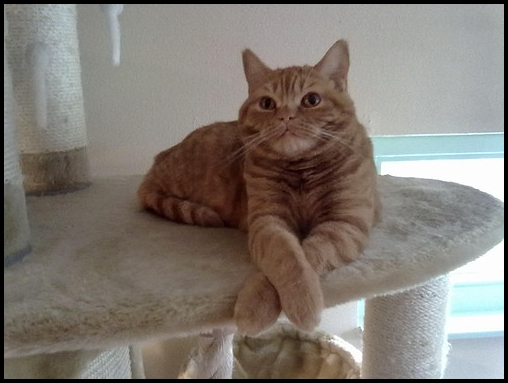

De Tosa Inu is van oorsprong een Japanse hond waarvan de reuen worden gebruikt als vechthonden. In onze samenleving mogen honden hier niet voor gebruikt worden. Ondanks zijn slechte reputatie is deze vrij zeldzaam voorkomende hond geschikt als gezinshond.

De Duitse Dog, in Nederland vaak Deense Dog genoemd naar de letterlijke Engelse vertaling Great Dean, is een echt bakbeest. De honden hebben een schofhoogte die varieert tussen de 72 en 80 cm en een gewicht van soms wel 80 kg of meer. Toch ziet deze groot reus er indrukwekkender uit dan hij of zij is. De Duitse Dog is een zeer rustige familiehond die een strikte opvoeding nodig heeft. Als je je hier aan houdt heb je een maatje voor het leven!

De Bichon Frise is een hondenras dat al jaren aan populariteit wint. Al bekend in de 14e eeuw, geliefd bij schilders, schoothond voor de aristocratie, kunstjes doen in het circus, hartendief bij vele hondenshows, toegepakt in een wieg voortgetrokken door schatterende kinderen, de Bichon Frise kent vele rollen en speelt ze allemaal gemoedelijk mee.

De pers is een van de oudste kattenrassen. geschikt voor kattententoonstellingen, heeft een heel dikke lange vacht, korte poten, een brede kop met de oren ver uit elkaar, grote ogen en een zeer korte schedel (brachycephaal). Dit leidt tot een verhoogd gezondheidsrisico voor dier, met name voor de ademhaling, misvormde of afwezige traanbuizen en ondervoorbeet. Perzische katten komen voor in een breed palet van kleuren en patronen en aftekeningen.
De Brits korthaar is een kortharig kattenras. Het ras heeft in verhouding kleine oren en grote ronde ogen, en vooral de katers hebben erg bolle wangen. Het is een grote en gespierde kat met een korte, dikke staart waarvan de top lichtjes afgerond is. Vroeger kwam het ras voornamelijk in de kleur blauw voor. Daarnaast was er crème en blauwschildpad en ook zilvertabby als meestvoorkomende kleuren en patronen. Tegenwoordig zijn er veel verschillende kleuren en patronen aangezien de meeste kleurfactoren en patronen/aftekeningen bij de kat voorkomend het ras binnengebracht zijn in de loop der jaren. De hedendaagse meest populaire kleurslagen heden ten dage zijn blauw, lilac en zilvertabby. De Brits korthaar heeft een korte en dichte vacht die niet plat tegen het lichaam ligt. Ook hebben de katten een goed ontwikkelde ondervacht met fijne dichte textuur.
De Skinny heeft altijd nog een beetje haren op de kop, de neus en de tenen. De Skinny cavia was een spontane mutatie die optrad in 1978 in hetlaboratorium van Montreal in Canada. In 1982 kocht Charles Rivers Laboratories een aantal haarloze cavia's aan en verspreidde deze onder caviafokkers. Charles Rivers Laboratories gebruikte alleen maar haarloze witte cavia's met rode ogen maar de fokkers kruisten ze met behaarde cavia's waardoor de haarloze allerhande huidkleuren kregen en ook diverse oogkleuren. De Skinny cavia heeft geen haar omdat er minder haarschachten zijn en/of omdat de haarschachten niet werken en dus geen haar kunnen produceren.